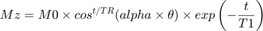
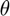
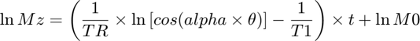
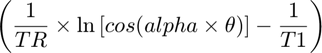
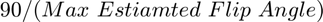
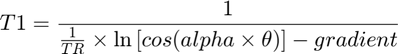

Estimating the T1 Relaxation Constand and Flip Angle Correction Factor from OLS Linearised Raw Data
Contents
For each section, the data is treated as continuous and, each section is modelled with the following relation:

where Mz represents the magnetisation in the z-direction, M0 is the initial magnetisation in the z-direction, t is the time, TR is the average repetition time for the section (the average time interval before taking a measurement), alpha is the flip angle correction factor,  is the estimated flip angle found from the flip1 parameter of the procpar file and T1 is the longitudinal relaxation constant, which describes the decay of hyperpolarisation
The above relation is not strictly true, since signal is actually proportional to Mxy and the data is discrete with the sense of the exact time when a measurement is taken, but the relation yields a good first estimate
The model is applied to the data by linearising it using:

By applying a linear model to the logarithm of the signal data, the gradient of the data is:

This function iterates through alpha to find the best estimate for T1. The best estimate is characterised by minimising the coefficient of variation between the different sections of data
Inputs
grads: is an array where each row holds the gradients for different sections of measurements for the same NMR peak. The different sections correspond to different flip angles. The columns hold data for different NMR peaks
flips: is an array holding the values of the estimated flip angles for each section of data
TRs: is an array holding the average repetition time for each section of data
Outputs
eT1: is an array holding the best first estimate for T1 for each peak
eAlpha: is an array holding the best first estimate for alpha for each peak
covs: is an array holding the coefficients of variations between the different secitions of data for the final estimated T1 and alpha values
function [eT1,eAlpha,covs] = findDecayParams(grads,flips,TRs)
cols = length(grads(:,1));
rows = length(grads(1,:));
eT1 = zeros(1,rows);
eAlpha = ones(1,rows);
alphasa = zeros(1,rows);
alphas = 0.001+alphasa;
facs = ones(1,rows);
afacs = ones(1,rows);
afacs = 0.01*afacs;
covs = ones(1,rows);
covs = 10000*covs;
iTR = 1./TRs;
iTRs = zeros(cols,rows);
for el = 1:rows
iTRs(:,el) = iTR;
end
Setting the Minimum and Maximum alpha Values
alpha cannot ever be allowed to be zero otherwise T1 will be undefined. In a hyperpolarisation experiment, the flip angles used can never be greater than 90°, or all of the polarisation will be lost, so alpha is not allowed to iterate greater than 
minAlpha = 0.001;
maxAlphaa = max(flips);
maxAlpha = floor(90/maxAlphaa);
count = 0;
avoid = [];
alpha is Iterated 200 Times to Find the Best Value
First alpha is verified to be valid, not 0 or smaller or greater than the maximum alpha value. If alpha is invalid, it is iterated until it is valid again.
T1 is calculated using:

Since T1 can't be negative, the first half of the denominator must be greater than the gradient. If that is not the case, alpha is iterated up to 1000 times until that is true. If more than 1000 iterations occur, the function gives up.
After T1 is calcualted, the coefficient of variation (cov) is calculated for all the T1_s in a section. If the cov is better than currently stored value, the estimated stored values for _alpha and T1 are set to the currently calculated values and alpha is iterated in the same direction as it has been going with a bigger jump than before. If that is not the case, alpha is iterated in the opposite direction that it had been previously with a smaller jump than the previous one.
while count < 200 for el = 1:rows while alphas(el) <= minAlpha facs(el) = 1; dafac = 1.2*facs(el)*afacs(el); alphas(el) = alphas(el)+dafac; end while alphas(el) >= maxAlpha facs(el) = -1; dafac = 1.2*facs(el)*afacs(el); alphas(el) = alphas(el)+dafac; end end angle = alphas.*flips; coss = cosd(angle); lnof = coss; lnp = log(lnof); halfdenom = iTRs.*lnp; trut = 1; while trut == 1 trut = 0; for el = 1:rows for ele = 1:cols halfdenomn = halfdenom(ele,el); counter = 0; bool = 0; if isempty(avoid) ~= 1 for elem = 1:length(avoid) if el == avoid(elem) bool = 1; end end end if bool == 0 while counter < 1000 if halfdenom(ele,el) <= grads(ele,el) trut = 1; facs(el) = -1*facs(el); if halfdenom(ele,el) >= halfdenomn facs(el) = -1*facs(el); end dafac = 1.2*facs(el)*afacs(el); if alphas(el)+dafac < maxAlpha alphas(el) = alphas(el)+dafac; elseif alphas(el)+dafac > minAlpha alphas(el) = alphas(el)+dafac; else counter = 1000; end angle(:,el) = alphas(el)*flips; coss = cosd(angle(ele,el)); lnof = coss; lnp = log(lnof); halfdenom(ele,el) = iTRs(ele,el)*lnp; if halfdenom(ele,el) > halfdenomn halfdenomn = halfdenom(ele,el); end counter = counter+1; if counter == 1000 avoid = [avoid el]; end else counter = 1000; end end end end end end denom = halfdenom-grads; T1sn = 1./denom; covsn = findCOV(T1sn); for el = 1:rows if covsn(el) < covs(el) covs(el) = covsn(el); eT1(el) = mean(T1sn(:,el)); eAlpha(el) = alphas(el); alphabacka = 0.1*facs(el)*afacs(el); alphaback = alphas(el)-alphabacka; anglesh = alphaback.*flips; cossh = cosd(anglesh); lnofh = cossh; lnph = log(lnofh); halfdenomh = iTRs(:,el).*lnph; denomh = halfdenomh-grads(:,el); T1snh = 1./denomh; covsnh = findCOV(T1snh); if covsnh < covs(el) covs(el) = covsnh; eT1(el) = mean(T1snh); eAlpha(el) = alphaback; facs(el) = -1*facs(el); afacs(el) = 0.1*afacs(el); afacsmove = facs(el)*afacs(el); alphas(el) = alphas(el)+afacsmove; else afacs(el) = 2*afacs(el); afacsmove = facs(el)*afacs(el); alphas(el) = alphas(el)+afacsmove; end elseif covsn(el) >= covs(el) afacs(el) = 0.9*afacs(el); facs(el) = -1*facs(el); afacsmove = facs(el)*afacs(el); alphas(el) = alphas(el)+afacsmove; end end count = count+1; end if isempty(avoid) ~= 1 disp('It was not possible to calculate T1 for peaks corresponding to the following indices ') disp(string(avoid)) end
end
eT1 =
37.8219
eAlpha =
1.2730
covs =
0.1564
Notes
The inputs in the example were:
grads: [-0.0286;-0.0520;-0.0888;-0.0284;-0.0519;-0.0875]
flips: [5;10;15;5;10;15]
TRs: [1;1;1;1;1;1]
The example was run by putting:
[eT1,eAlpha,covs] = findDecayParams( [-0.0286;-0.0520;-0.0888;-0.0284;-0.0519;-0.0875],[5;10;15;5;10;15], [1;1;1;1;1;1])
into the command window